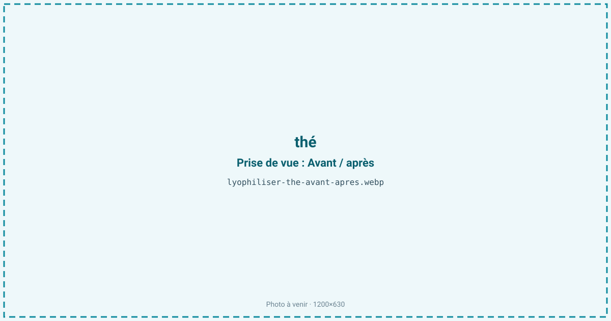
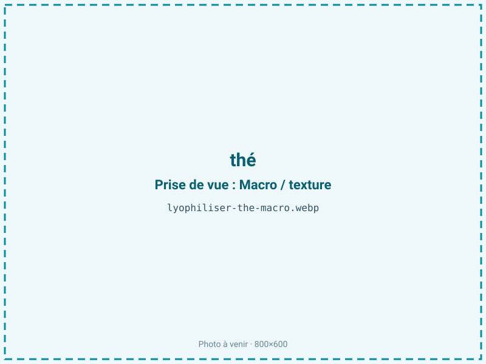
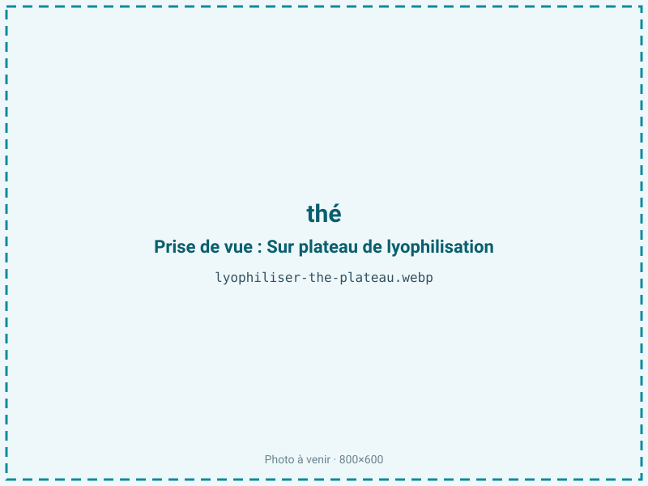
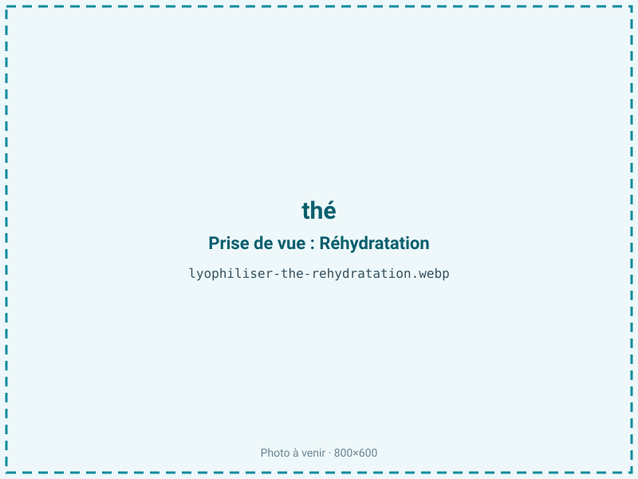

Lyophiliser du thé
Le thé infusé s'oxyde et perd son arôme en quelques heures. Lyophiliser une infusion concentrée donne un thé instantané qui restitue les polyphénols, la couleur et le parfum bien mieux qu'un séchage à chaud. C'est un thé soluble premium pour boissons instantanées, RTD et mixologie, sans amertume de surextraction.

En bref
Comment thé se comporte à la lyophilisation
Comme le café, le thé se lyophilise sous forme d'infusion concentrée, non de feuilles. L'infusion est riche en polyphénols — catéchines et EGCG pour le thé vert, théaflavines et théarubigines pour le thé noir déjà oxydé —, en L-théanine (l'acide aminé qui porte la douceur) et en caféine, stable. Ces polyphénols sont sensibles à l'oxydation : dans une infusion laissée à l'air, ils brunissent et perdent leur activité, ce qui rend la vitesse de traitement déterminante.
On concentre l'infusion, on la congèle, puis on sublime. Le thé étant un extrait maigre (moins de 2 % de lipides), sa matrice sèche est surtout faite de polyphénols, de sucres solubles et de composés azotés. À la sublimation, l'eau part et laisse une poudre ou des granulés très solubles, qui se redissolvent instantanément. L'enjeu est double : retenir les arômes volatils, qui fuient avec la vapeur d'eau, et éviter toute oxydation des catéchines, plus fragiles dans le thé vert que dans le thé noir dont les polyphénols sont déjà transformés.
Paramètres de cycle
Concentrer l'infusion avant traitement : plus l'extrait est riche en matière sèche, plus le cycle est court et moins les arômes ont le temps de fuir. Congeler à −40 °C pour une structure fine. En primaire, garder une clayette modérée afin de ne pas chasser les composés volatils ; le secondaire descend l'humidité résiduelle. Le thé étant un produit maigre, une aw basse de 0,20 à 0,30 est visée sans aucun risque de rancissement : ici, descendre est franchement favorable à la stabilité, car les polyphénols et la couleur se conservent d'autant mieux que le produit est sec et à l'abri de l'oxygène. Le critère d'arrêt est un extrait sec, non collant, à aw inférieure ou égale à 0,30. Travailler vite entre extraction et congélation limite l'oxydation des catéchines, la plus difficile à rattraper ensuite.
Pièges connus
- Concentrer l'infusion avant traitement.
- Polyphénols sensibles à l'oxydation.



Variantes & provenance
Le type de thé change tout : le thé vert, riche en catéchines non oxydées, est le plus fragile et exige la plus grande rapidité ; le thé noir, déjà oxydé, est plus stable mais moins végétal ; l'oolong et le thé blanc se situent entre les deux. La provenance et le grade de feuille modulent la teneur en polyphénols et le profil aromatique de l'infusion de départ. Les paramètres d'infusion (température, durée, ratio feuille/eau) fixent la richesse et l'amertume de l'extrait avant même le séchage : une infusion trop longue apporte de l'astringence que le procédé ne corrigera pas. On peut aussi lyophiliser des infusions aromatisées (agrumes, jasmin), dont les volatils ajoutés demandent la même vigilance.
Conservation & DLUO
Le thé est un produit maigre : son facteur limitant n'est pas le rancissement mais l'oxydation des polyphénols et la reprise d'humidité. Une aw basse lui est donc franchement favorable, sans le risque propre aux produits gras. Les catéchines du thé vert, en particulier, s'oxydent et brunissent au contact de l'oxygène et de l'humidité, en perdant leur couleur et leur activité : l'exclusion de l'air compte donc autant que la sécheresse. L'extrait est par ailleurs hygroscopique et se motte s'il reprend l'eau. Comptez 18 à 24 mois en barrière, à température ambiante et à l'abri de la lumière et de l'oxygène ; un thé vert gagne à un inertage azote, un thé noir en tolère un peu plus. Un stockage au sec et au frais préserve à la fois la couleur, les polyphénols et l'arôme volatil.
18 à 24 mois en barrière.
Estimez selon votre emballage :
Face aux autres procédés de séchage
Le thé instantané industriel se fait souvent par atomisation à chaud, dont le front thermique chasse les arômes et peut oxyder une partie des catéchines : le produit est plus plat et plus foncé. Le séchage à l'air ne s'applique pas à un extrait liquide, et le micro-ondes sous vide, malgré sa basse pression, garde un front chaud défavorable aux polyphénols du thé vert. La lyophilisation retient mieux les composés volatils et limite l'oxydation, ce qui donne un thé soluble à la couleur et au parfum proches de l'infusion fraîche. C'est particulièrement décisif pour le thé vert et les thés délicats, où la moindre oxydation se voit et se goûte.
Marchés & applications
Thé instantané premium, boissons prêtes à consommer (thé glacé, RTD), mélanges pour lattes et matcha lattes, mixologie et cocktails, poudres pour l'agroalimentaire et la pâtisserie. Les clients types sont les maisons de thé haut de gamme, les négociants de thé de spécialité, les industriels des boissons instantanées et RTD, les mixologues et les marques de compléments qui recherchent un extrait de thé soluble, coloré et riche en polyphénols, sans l'astringence d'une surextraction.
- Thé instantané premium
- Poudre pour boissons
Questions fréquentes — thé
Lyophilise-t-on des feuilles de thé ?
Non, une infusion concentrée : les feuilles sont infusées, l'extrait est concentré puis congelé et sublimé. On obtient un thé soluble instantané.
Le thé vert est-il plus difficile que le thé noir ?
Oui : ses catéchines ne sont pas oxydées et s'altèrent vite, ce qui impose plus de rapidité et un meilleur inertage. Le thé noir, déjà oxydé, est plus stable.
Garde-t-il ses antioxydants ?
En grande partie : le froid et l'exclusion de l'air limitent l'oxydation des polyphénols, mieux qu'un séchage à chaud.
Pourquoi concentrer l'infusion avant ?
Un extrait plus riche raccourcit le cycle et limite la fuite des arômes ; sécher une infusion très diluée serait long et coûteux.
Peut-on lyophiliser un thé aromatisé ?
Oui, mais les arômes ajoutés (agrumes, jasmin) sont volatils et demandent la même vigilance que les composés naturels du thé.
Combien d'infusion pour 100 g de poudre ?
Cela dépend de la concentration ; à partir d'un extrait concentré, le ratio est proche de 5:1, soit environ 500 g d'extrait pour 100 g de poudre.
Se dissout-il instantanément ?
Oui, l'extrait lyophilisé se redissout immédiatement dans l'eau chaude ou froide, sans dépôt, contrairement à une poudre de feuilles.
Prochaine étape : envoyez-nous 200 g
Vous avez les repères du thé. La suite logique : nous envoyer un échantillon et repartir avec une fiche technique sur votre produit — rendement, aw finale, coût au kilo.
Tester du thé — 250 à 500 €Déductible de votre premier lot.